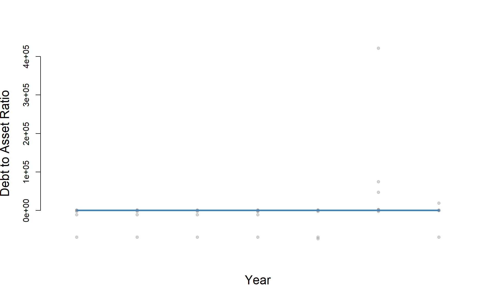
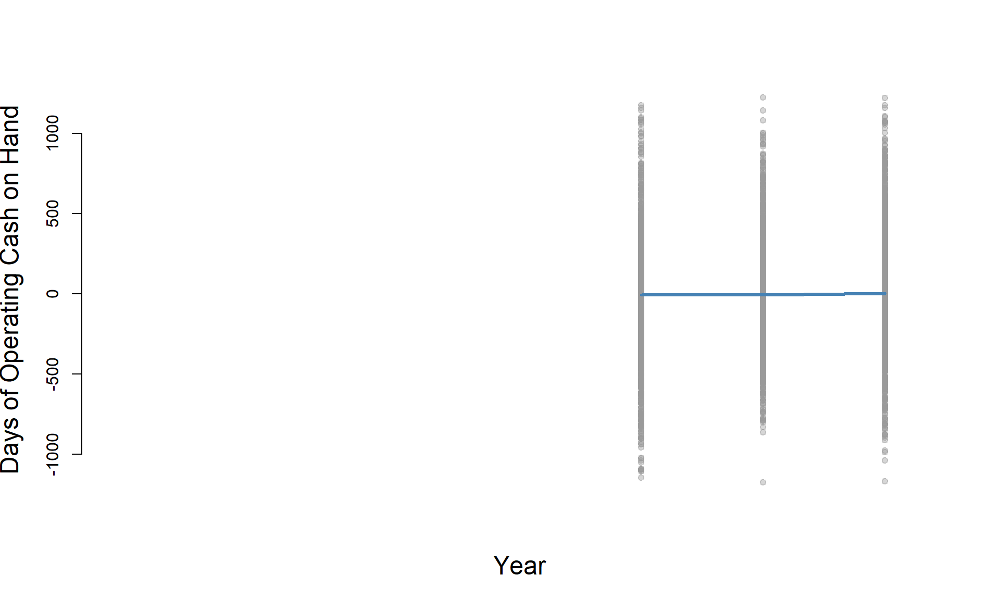

Panel Data Analysis
This page is used to create a set of metric variables for a panel dataset of our organizations (years = 2001, 2004, 2007, 2010, 2013, 2016, and 2019)

full_dataset<- read.csv("C:/Users/LLo/Documents/GitHub/fiscal-health/04-Panel-Datasets/org_panel_data.csv")
metric_analysis <- full_dataset
#Create the Debt to Asset Ratio Metric
zero.these <- full_dataset$totassetsend == 0
full_dataset$totassetsend[ full_dataset$totassetsend == 0 ] <- NA
metric_analysis$dar <- full_dataset$totliabend / full_dataset$totassetsend
#standardize DAR scale
metric_analysis$dar[ full_dataset$dar < 0 ] <- 0
metric_analysis$dar[ full_dataset$dar > 1 ] <- 1
#Create Days of Operating Cash Metric
operating_cash <- ( full_dataset$nonintcashend + full_dataset$svngstempinvend +
full_dataset$pldgegrntrcvblend + full_dataset$accntsrcvblend)
# can't divide by zero
days_payable <- ( full_dataset$totfuncexpns - full_dataset$deprcatndepletn )/365
days_payable[ days_payable == 0 ] <- NA
metric_analysis$docoh <- operating_cash / days_payable
#winsorize at 0 days and 95%
x.05 <- quantile( metric_analysis$docoh, 0.05, na.rm=T )
x.95 <- quantile( metric_analysis$docoh, 0.95, na.rm=T )
metric_analysis$docoh[ metric_analysis$docoh < 0 ] <- 0
metric_analysis$docoh[ metric_analysis$docoh > x.95 ] <- x.95
#Create Debt Management Ratio
liabilities <- ( full_dataset$totliabend)
unres_nassets <- ( full_dataset$unrstrctnetasstsend)
# can't divide by zero
unres_nassets[ unres_nassets == 0 ] <- NA
# SAVE RESULTS
metric_analysis$debt_mgmnt_ratio <- liabilities / unres_nassets
#Winsorization at 5% and 95%
x.05 <- quantile( metric_analysis$debt_mgmnt_ratio, 0.05, na.rm=T )
x.95 <- quantile( metric_analysis$debt_mgmnt_ratio, 0.95, na.rm=T )
metric_analysis$debt_mgmnt_ratio[ metric_analysis$debt_mgmnt_ratio < x.05 ] <- x.05
metric_analysis$debt_mgmnt_ratio[ metric_analysis$debt_mgmnt_ratio > x.95 ] <- x.95
#Create Self-Sufficiency Ratio
earned_income <- full_dataset$totprgmrevnue
total_expenses <- full_dataset$totfuncexpns
# can't divide by zero
total_expenses[ total_expenses == 0 ] <- NA
# SAVE RESULTS
metric_analysis$selfsufficiency <- ( earned_income / total_expenses )
#Winsorize metric at 5% and 95%
x.05 <- quantile( metric_analysis$selfsufficiency, 0.05, na.rm=T )
x.95 <- quantile( metric_analysis$selfsufficiency, 0.95, na.rm=T )
metric_analysis$selfsufficiency[ metric_analysis$selfsufficiency < x.05 ] <- x.05
metric_analysis$selfsufficiency[ metric_analysis$selfsufficiency > x.95 ] <- x.95
#Create Asset-Revenue Ratio
# TEMPORARY VARIABLES
total_assets <- full_dataset$totassetsend
total_revenues <- full_dataset$totrevenue
# can't divide by zero
total_revenues[ total_revenues == 0 ] <- NA
# SAVE RESULTS
metric_analysis$asset_rev_ratio <- total_assets / total_revenues
#Winsorize metric at 5% and 95%
x.05 <- quantile( metric_analysis$asset_rev_ratio, 0.05, na.rm=T )
x.95 <- quantile( metric_analysis$asset_rev_ratio, 0.95, na.rm=T )
metric_analysis$asset_rev_ratio[ metric_analysis$asset_rev_ratio < x.05 ] <- x.05
metric_analysis$asset_rev_ratio[ metric_analysis$asset_rev_ratio > x.95 ] <- x.95
#Setting the means to be within-organization analysis
#for DAR
metric_analysis <-
metric_analysis %>%
group_by( EIN ) %>%
mutate( mean.dar=mean( dar, na.rm=T ) ) %>%
ungroup() %>%
mutate( dar.centered = dar - mean.dar )
#for Days Operating CoH
metric_analysis <-
metric_analysis %>%
group_by( EIN ) %>%
mutate( mean.docoh=mean(docoh, na.rm=T ) ) %>%
ungroup() %>%
mutate(docoh.centered = docoh - mean.docoh)
#for Debt Management Ratio
metric_analysis <-
metric_analysis %>%
group_by( EIN ) %>%
mutate( mean.debt_mgmnt_ratio=mean(debt_mgmnt_ratio, na.rm=T ) ) %>%
ungroup() %>%
mutate(debt_mgmnt_ratio.centered = debt_mgmnt_ratio - mean.debt_mgmnt_ratio)
#for self Sufficiency Ratio
metric_analysis <-
metric_analysis %>%
group_by( EIN ) %>%
mutate( mean.selfsufficiency=mean(selfsufficiency, na.rm=T ) ) %>%
ungroup() %>%
mutate(selfsufficiency.centered = selfsufficiency - mean.selfsufficiency)
#for Asset Revenue Ratio
metric_analysis <-
metric_analysis %>%
group_by( EIN ) %>%
mutate( mean.asset_rev_ratio=mean(asset_rev_ratio, na.rm=T ) ) %>%
ungroup() %>%
mutate(asset_rev_ratio.centered = asset_rev_ratio - mean.asset_rev_ratio)jplot(metric_analysis$year.y, metric_analysis$dar.centered,
xlab= "Year",
ylab= "Debt to Asset Ratio",
xaxt="n", xlim=c(2000,2020))
jplot(metric_analysis$year.y, metric_analysis$docoh.centered,
xlab= "Year",
ylab= "Days of Operating Cash on Hand",
xaxt="n", xlim=c(2000,2020))
```